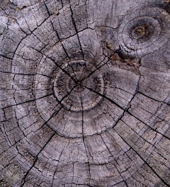
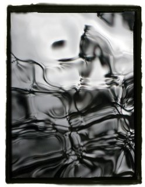
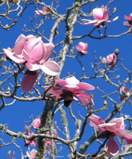
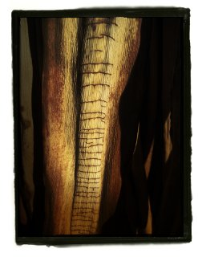
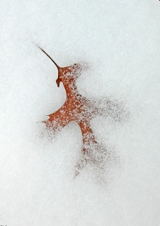

THE FOURTH ANNUAL HERON’S NEST
ILLUSTRATION CONTEST
This year’s illustration contest drew nearly three hundred entries. Thank you for making our selection process so difficult!
Congratulations to those whose work has been selected and our deep appreciation for everyone who has offered their work. As always,
it was with a mixture of gratitude and regret that we enjoyed but ultimately had to relinquish the opportunity to use so many truly
beautiful images. We hope that those of you who have not been rewarded with a selection this year will not be discouraged and that
we will have the opportunity of seeing more of your work later this year.

Overview:
Natalia L. Rudychev
|
|

Readers’ Choices:
Ron Moss
|

Spring:
Sandra Simpson
|
|

Summer:
Ron Moss
|

Autumn:
Richard Krawiec
|
|

Winter:
Natalia L. Rudychev
|
We applaud the winners of the fourth annual Heron’s Nest
Illustration Contest and are grateful to all of the artists who participated.
John Stevenson
Managing Editor
back to top.
|